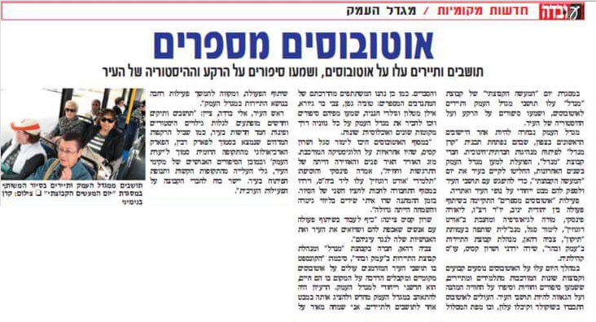

חלקו הראשון של ״יום המעשה הקבוצתי״ במגדל העמק נערך ב-28 בינואר תחת הכותרת
לגלות את מגדל העמק ולהתאהב בה מחדש. 23 העמיתים פיתחו בשבועות האחרונים מעשה קבוצתי שהתבסס על לימודיהם בתכנית מנדל – הם פיתחו את תכנית היום בשיטת ״גיבוש הסכמות משותפות בקונצנזוס״ ובחרו בשלושה נושאים ראשיים למעשה: הראשון – הפגשה בין קבוצות בעיר שאינן נפגשות בחיי היום; השני – התבוננות במגדל עמק דרך ההיסטוריה החברתית שלה; והשלישי – בניית שיתוף פעולה בין הקבוצה ובין הרשות המקומית.
בהתאם לשלושה נושאים אלו נערכה סדרת פגישות בין נוער למבוגרים, בין נוער ובין קבוצות אתניות שונות בעיר, בין נשים דתיות וחילוניות ועוד. ההיסטוריה של העיר הוצגה במופע מרהיב של ״אוטובוסים מספרים״, ובו הציגו עמיתים בקבוצה לנוסעי האוטובוסים, תוך כדי נסיעה בקווים העירוניים, את ההיסטוריה של העיר. בחודש הבא ייערך יום משותף של פעילות ביער, בהשתתפות צוות בכיר מן העירייה ועמיתי התוכנית.
בפעילות בתחנות השונות השתתפו מאות מתושבי העיר, והם נחשפו לקיומה של תכנית המנהיגות בעיר ולרעיונות ולחזון של העמיתים בדבר עתיד העיר. עמיתי תכנית מגדל העמק סיפרו על המיזמים שלהם:
אפרת קרניאל:
"הרעיון היה להפגיש בין קבוצות במגדל העמק שבחיים לא ייפגשו. הקבוצה שאני לקחתי על עצמי זו כיתת יעדים – חבר'ה מאוד אינטליגנטיים אבל עם קשיים – וקבוצת מתנדבים של יד שרה. הרעיון היה ליצור ביניהם דיאלוג דרך הבישול, והיה מדהים לראות את הדיאלוג שנוצר, את לקיחת האחריות על-ידי הנערים והנערות האלה. זו הייתה חוויה מהממת, חגיגה של טעמים, צבעים, ובעיקר של מפגש וחיבור בין אנשים".
אוקסנה וונחולסקי: "בתהליך לקראת היום הזה למדתי המון על מגדל העמק, על אנשים עם סיפורים מרתקים מהעיר, על ההיסטוריה של העיר. כשעליתי לאוטובוס במסגרת הפרויקט "אוטובוסים מספרים" שיתפתי קבוצה של אנשים ממועדון בריטניה בעיר – קבוצה של פנסיונרים רוסים – בידע שצברתי, חיברתי אותם לסיפורים על השכונות ועל מנהיגים מהעיר. אני רוצה שאנשים יתגאו בעיר הזאת וירגישו שייכות אליה, והיום עשינו צעד בכיוון הזה".
דפנה חסן:
"בקבוצה שלי החלטנו לחשוף את בני הנוער בעיר לחמש קבוצות ותרבויות – הווטרנים שעלו מברית המועצות, בני המנשה, יוצאי מרוקו, יוצאי הקווקז ויוצאי אתיופיה. רוב בני הנוער מעולם לא נפגשו עם האנשים האלה ועם התרבויות האלה – הטקסים, המאכלים, סיפורי הגבורה והעלייה לארץ. המטרה שלנו הייתה להוריד את רמת הניכור בין הקבוצות. אני מקווה שזו תהפוך להיות מסורת בעיר".


{kind=link}